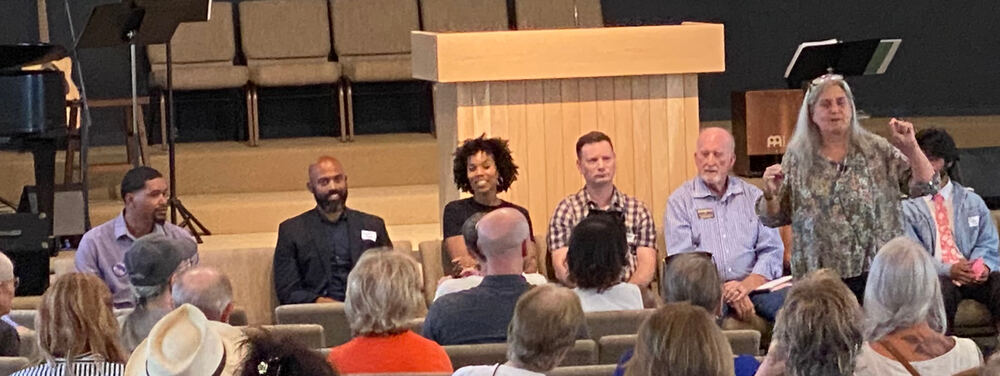

No Donations Accepted. Why?
Mike has accepted $0 in donations. This means he will represent you, not someone else. Every other candidate has accepted more donations from outside District 1 than in it.
| Candidate | Money raised in District 1 |
|---|---|
| Michael Nahas | 100% |
| Portia Riggins | 45% |
| Misael Ramos | 32% |
| Alexandria Anderson | 28% |
| Steven Brown | 22% |
| Amber Goodwin | 13% |
(All numbers are from the financial numbers reported on October 5, 2026.)

Above is a photo of Steven Brown, Misael Ramos, and Alexandria Anderson at the Politics and Popsicles event hosted by Zilker Neighborhood Assn and Barton Hills Neighborhood Assn. Those neighborhoods are not in District 1. But they are in the wealthy 78704 ZIP code.
| Candidate | Money raised in 78704 |
|---|---|
| Michael Nahas | $0 |
| Portia Riggins | $0 |
| Alexandria Anderson | $1,620 |
| Misael Ramos | $1,725 |
| Steven Brown | $1,829 |
| Amber Goodwin | $2,400 |
As of October 13, 2026, Mike Nahas has spent $1,408.77. Every candidate, besides Portia Riggins, has raised more money in a single ZIP code outside District 1 than Mike Nahas has spent on this campaign.
Amber Goodwin has raised more money from New York City, $2,601, than Mike Nahas has spent on this campaign.
Every time you see another candidate's yard sign, know where the money came from. If you think accepting $500 donations from people outside your District is an appropriate action for a candidate, consider voting for someone else. If you think it is not, vote for Mike Nahas.